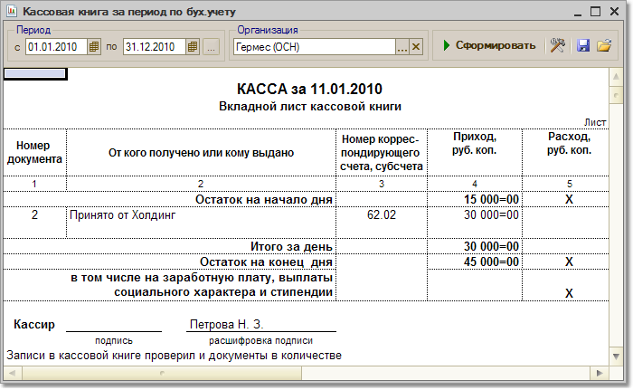

Меню Отчеты > Денежные средства > Кассовая книга (Оперативный учет)
Данный отчет формирует регламентную форму кассовой книги по данным бухгалтерского учета. Отчет формируется по организации, выбранной в настройках отчета за указанный период, а также по выбранным в настройках кассам/кассе данной организации. Можно также распечатать обложку кассовой книги. При формировании кассовой книги запоминается номер сформированного листа, который хранится в регистре сведений "Номера листов кассовой книги". Номера листов кассовой книги могут быть пересчитаны с начала года, при установленной отметке "Пересчитать номера листов с начала года".
Параметры формирования отчета
По кнопке "Настройка" для кассовой книги вызывается форма настройки параметров отчета:
Щелкните кнопку "Сформировать" для формирования отчета.